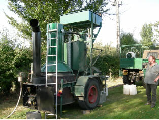

|
La Ferme de La Godinière
27410
Le Noyer en Ouche
dernière mise à jour de cette page : 03.10.2010
Notre ancienne adresse web :cidre.rene.lesur.club.fr est
devenue obsolète et est
transférée sur
http://pagesperso-orange.fr/lagodiniere27/
En Savoir plus sur :
Le Calvados
Du Cidre au Calvados
|
|
Le Calvados A O C cru du Pays de la Risle. Nous proposons un Calvados Réserve vieilli 5 ans et un Calavados Hors d'Age vieilli 10 ans.
|
Résultat de la distillation du cidre, cette opération se fait sur place avec un alambic par un Bouilleur de Cru ambulant. Le Calvados est vieilli de longues années en fûts de chêne.
Traditionnellement, il est d'usage de déguster le Calvados au milieu du repas, c'est le trou normand, mais aussi en digestif ou en cocktail. Il entre dans la préparation de recettes de cuisine. |
 |
Un livre de référence :books.google.fr/books?isbn=916315546X...Calvados: the world's premier apple brandy : tasting, facts and travel - Résultats Google Recherche de Livres
Henrik Mattsson - 2005 - Cooking - 172 pages |
Pour en savoir plus sur le Calvados :
LE CALVADOS est l'une des quatre eaux-de-vie françaises à Appellation d'Origine Contrôlée
(avec le Cognac, l'Armagnac et le Rhum de Martinique). Le Calvados se
déguste en différentes circonstances : cocktails, trou normand, digestif, préparations culinaires, sur glace, en long drink.
L'origine du Calvados semble revenir
au Sire de Gouberville, gentilhomme du Cotentin, qui vécut au XVIème siècle en
son manoir de Mesnil-Auval dans la Manche, eut
l'idée de distiller le cidre, selon un écrit du 28 mars 1553 dans les pages du
journal qu'il tenait. Ce n'est qu'au cours du XVIIIè siècle que des documents
témoignent de la distillerie en Normandie. En 1600, la corporation des distillateurs d'eau-de-vie de
cidre sera créée
C'est en 1942 que le calvados est
reconnu en appellation réglementée (AOR) et qu'il devient
Appellation d'Origine Contrôlée en 1984.
Document (BNICE anciennement, devenu IDAC) : ...à la découverte du Calvados
Définition du Calvados :
Seules ont droit à l'appellation d'origine contrôlée "Calvados", les eaux de vie
obtenues par distillation, à l'intérieur de l'aire de production définie, des
Cidres ou Poirés de distillation produits avec des pommes à cidre ou des poires à poiré
récoltées manipulées et transformées à l'intérieur de cette même aire délimitée.
Décret du 11 Septembre 1984 -(J.O du 21-09-84)modifié par Décret des 08-07-92 et 31
Déc.
1997
Les Vergers doivent être identifiés et respecter les modes de plantation,
de conduite, d'entretien et de culture.
Les rendements des vergers en
production destinés à l'élaboration de cidre pour l'appellation d'origine contrôlée "Calvados" ne doivent pas
excéder :
-pour les
vergers "haute tige" : 20 tonnes par hectare de verger de pommiers
et 30 tonnes par hectare de poiriers
-pour les
vergers "basse tige" : 40 tonnes par hectare de verger
Les pommes récoltées seront transformées en cidre, qui sera distillé à l'aide
d'un alambic, le titre alcoométrique à la sortie de l'alambic devra être de 72%
maximum pour prétendre à l'AOC "Calvados". Pour être commercialisé, Le Calvados
aura dû obtenir son certificat d'agrément délivré par l'IDAC (Interprofession
Des Appellations Cidricoles).
Pour être mis à la consommation, Le
Calvados doit être conservé sous bois dès sa sortie d'alambic, et subir un
vieillissement minimal de deux années en récipient de chêne.
Les comptes de vieillissement
sont tenus par l'IDAC. L'année de distillation, la
Calvados est placé en "Compte 00" ; l'année suivante il sera en "Compte 0" ;
puis passera en "Compte 1" et ainsi de suite.
En "Compte 2", Le Calvados pourra
bénéficier de la dénomination : "Trois Etoiles","Trois Pommes"
En "Compte 3" : "Vieux" -
"Réserve"
En "Compte 4" : "V.O" - "Vieille
Réserve" - "VSOP"
En "Compte 6" : "Extra" ou "XO" -
"Napoléon" - "Hors d'Age" - "Age Inconnu"
En Cas d'assemblage, seul l'âge
de la plus jeune eau-de-vie est indiqué.
nb. Cela s'entend bien évidemment pour le Calvados conservé sous bois (en fûts),
une fois mis en bouteilles, le compte est bloqué.
SEULES peuvent être
qualifiées de "production fermière" ou "produit fermier" les eaux de vie
produites par les exploitations agricoles à partir de pommes à cidre récoltées
exclusivement sur la même exploitation, avec un rendement maximum au pressurage
de 750 litres par tonne de pommes, exclusivement en pur jus. La distillation
devra intervenir au minimum quatre mois après la fabrication du cidre. La mise
en bouteilles doit avoir lieu sur l'exploitation
(Extrait du Décret cité)
Information sur les organisations professionnelles :
IDAC (Interprofession des Appellations Cidricoles)
6 Place Boston Immeuble Citipolis 14200 HEROUVILLE
SAINT CLAIR
Tél. : 02 31 53 17 60 Fax : 02 31 53 78 09
idac.aoc@wanadoo.fr
http://perso.wanadoo.fr/idac/
Le nouveau site Internet de
l'Interprofession est opérationnel depuis le 1er mars 2007 :
http://www.idac-aoc.fr/
2009 : Du changement dans les AOC : La suite bientôt ...
|
Une qualité exceptionnelle pour la récolte 2009 de fruits à cidre !!!
Précise Olivier Lebreton président de la section fdsea 27 et membre du bureau de la FNPFC .
(qui nous fait parvenir le 17 décembre 2009 ce communiqué de presse en demandant de le diffuser le plus largement possible, c'est chose faite à l'instant, mais je me dois d'apporter quelques petites remarques personnelles...)
La récolte de fruits à cidre et à Calvados vient de s’achever en beauté ! La récolte est inférieure de 20 % par rapport à l’an dernier, avec une qualité excellente en sucres et en arômes fruités. Ce sera une année exceptionnelle, avec des cidres de très bonne tenue, de très bonne qualité, disponible à partir de janvier 2010. Une année exceptionnelle également pour la qualité des Calvados,n’oublions pas que le tiers du département de l’Eure est territoire AOC Calvados. Pour les producteurs de fruits à cidre, réunis au sein de la FNPFC, c’est aussi l’occasion de rappeler leur combat pour la valorisation de cette qualité des fruits à Calvados et à cidre, à la fois par le consommateur et par le transformateur. La FNPFC souhaite que les efforts de qualité, menés par les producteurs depuis des années, trouvent leur pleine expression dans ces conditions exceptionnelles 2009. Pour proposer des produits de qualité exceptionnelle au consommateur. Pour que le transformateur répercute au final la qualité, au niveau du prix payé pour les fruits à cidre. Il faut aussi savoir que dans chaque bouteille, il n’y a que 10 centimes de pommes à cidre soit 4 % du prix de vente ! Ces efforts méritent une meilleure rémunération de notre travail ! Cette année exceptionnelle est l’occasion idéale pour (re)découvrir la diversité des cidres de l’année. D'automne, d'hiver ou du printemps, le cidre est présent toute l’année ! « Comme la récolte est inférieure à la moyenne des 5 dernières années, avec une qualité exceptionnelle, toutes les pommes à cidre trouveront un débouché dans le cidre » s’est réjoui Thomas Pelletier, Président de la FNPFC.
à suivre... dd
Voir également le courrier adressé au Ministre sur les cidres AOC et IGP :
Monsieur le Ministre Ministère de l'Alimentation, de l'Agriculture et de la Pêche 78, rue de Varenne 75349 PARIS 07
Paris, le 21 décembre 2009 Objet : Loi de Modernisation de l’Agriculture et de la Pêche / contrôle externe des cidres IGP.
Monsieur le Ministre, En tant que producteur de fruits à cidre de votre région et en tant que Président de la FNPFC, nous avons l’honneur de vous solliciter pour envisager une modification des textes de loi en vigueur, à propos du contrôle externe des cidres sous Indication Géographique Protégée (nommés ci-après cidres IGP).
Les textes de loi actuels prévoient pour les cidres IGP un contrôle uniquement par un organisme certificateur. Or, le contrôle des AOC cidricoles se fait par un organisme d'inspection. Cette situation pose problème à tous les producteurs locaux qui commercialisent à la fois des cidres IGP et des AOC cidricoles, soit 50 % des producteurs: - ces producteurs sont contrôlés deux fois, une fois par l’organisme certificateur, une fois par l’organisme d’inspection, alors que beaucoup des points de contrôle sont communs et que les deux pourraient être effectués en même temps ; - ce doublon augmente considérablement le coût des contrôles, qui est aujourd’hui le frein majeur à l’accès à l’IGP pour ces producteurs. Cette "anomalie", simple à corriger, est donc très préjudiciable pour l’avenir des cidres IGP.
Les vins IGP sont, quant à eux, contrôlés par un organisme d’inspection ou un organisme certificateur. Nous ne comprenons pas pourquoi les mêmes dispositions ne s'appliquent pas aux cidres IGP. D’autant moins que toutes ces boissons relèvent aujourd'hui du même comité national Inao « Vins et Cidres IGP ».
Dans le cadre du projet de LMAP, nous souhaiterions, Monsieur le Ministre, que vous fassiez insérer cette modification en autorisant les deux types de contrôles pour les cidres IGP. Cette modification n'entraîne aucun surcoût pour l'Etat, ni altération de la qualité des contrôles, ni impact qualitatif et gustatif pour le consommateur.
Nous sommes prêts à vous rencontrer si vous souhaitez de plus amples explications. Cette démarche est relayée par nos collègues auprès de tous les parlementaires des régions concernées. Dans l’espoir d’une réponse positive, nous vous prions de bien vouloir agréer, Monsieur le Ministre, l’expression de notre haute considération.
Olivier LEBRETON Producteur régional Thomas PELLETIER Président
à suivre...
dd |
Promotion :
Calvados Nouvelle Vogue (Voir IDAC).
Concours et Manifestations :
Concours International de Création de cocktails à base de Calvados :
Lundi 18 Avril 2005 (9ème Edition)
Ce Trophée International permet la rencontre de plus de 100 barmen issus de 10
pays européens :
Allemagne, Belgique, France, Grande-Bretagne, Hollande, Luxembourg,Suisse,
Suède.
Association des barmen de France - Association des barmen de Normandie
(Voir IDAC).
|
Retour
Les Produits
ou
Accueil ou
Plan du
site |
En Savoir plus sur :
Écrivez nous pour donner votre impression et votre suggestion,
merci.
Pour nous écrire : cliquez
Ma messagerie est protégée par Avast
Conception et Réalisation : René Lesur
info légale : l'abus d'alcool peut
nuire à la santé, consommer avec modération.
sauf pour la femme enceinte qui risque des dommages pour le fœtus.